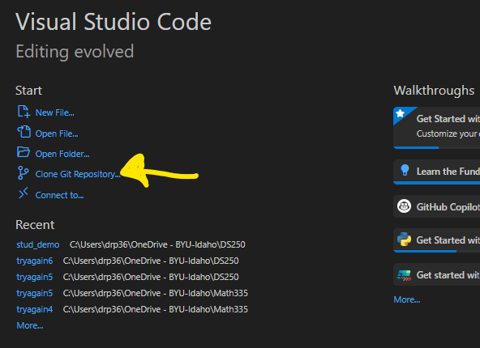
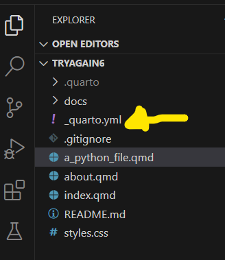
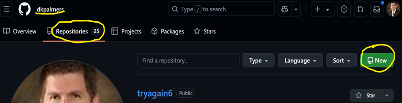
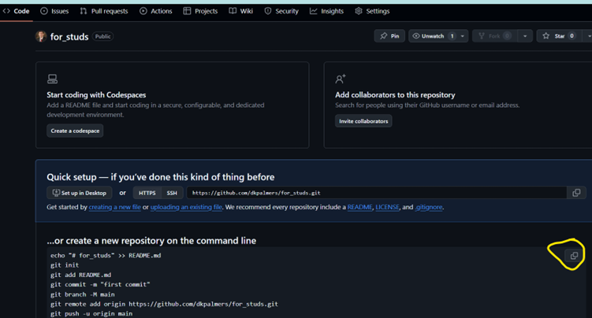
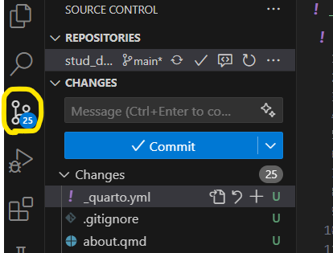
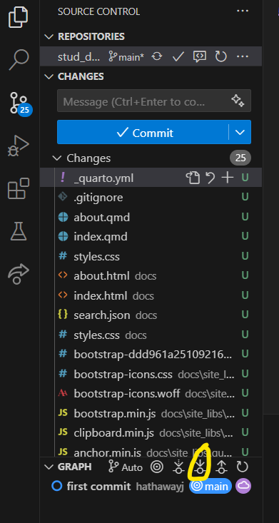
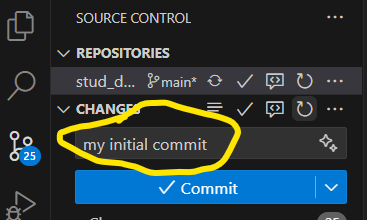
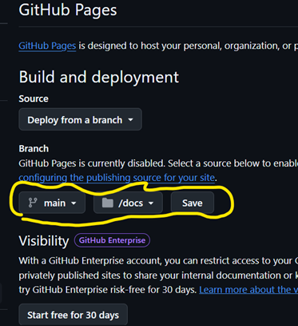

Project 6: Git Your DS Portfolio Online
Background
GitHub is an online platform where data scientists and developers can communicate and share work. It has also morphed into a tool to house all your work in a portfolio. Think about an Art student and how they have to develop their portfolio of various skills they have across the art classes. Similarly you will want to showcase you skillset across the Data Science skillsets.
As students, you will want to curate your creative work on GitHub using a program called Git. GitHub is the place to share your original work, not your homework assignments. The reading assignments will dive deaper into what to include in your portfolio and what not to include.
Many people store their personal websites, blogs, and project websites on GitHub. Our textbook and course are hosted on GitHub, and you can see J. Hathaway’s or Ryan Hafen’s personal Data Science websites that are hosted on GitHub as well.
For this project, you will be making a public website that is a data science portfolio that will be hosted on GitHub. Your Resume will be one section of your portfolio/website. You should also post Data Science Society projects, personal projects, and any other data science related work you have done outside of class. Do not post any of the DS250 course work in this portfolio.
Data
Portfolio: BYUI Data Science Portfolio
Readings
- New to Git and GitHub? This Essential Beginners Guide is for you
- Git vs. GitHub: What is the difference between them?
- Git in Visual Studio Code video
- Setting up a website using Quarto documents
Optional
Portfolio Resources
Questions and Tasks
There are multiple ways to set-up a website using quarto documents. A succinct synopsis of the 3 ways is found here. We will walk through the first and 3rd ways.
The first option is to “Render sites on your local machine to the docs directory, check the rendered site into GitHub, and then configure your GitHub repo to publish from the docs directory. This is referred to as Method 1 below. We will show how to do this using a starting template, or from scratch. The 3rd option (also called Method 3) is to “Use a GitHub Action to automatically render your files and publish the resulting content whenever you push a source code (e.g. quarto file) change to your repository”. This will be illustrated using a template file as a starting point.
Choose 1 of the 3 tabs below and follow those instructions for publishing a portfolio website hosted through your own personal GitHub repository.
Navigate to the Data Science Portfolio2 repo in GitHub
Click the green button ‘Use this template’ and select ‘Create a new repository’
a. Select yourself as owner
b. Pick a professional name (potential employers will be seeing this)
c. Choose ‘public’
d. Click ‘create repository’
Copy the url of the GitHub repo. You’ll need this when we return to VS Code
Modify ‘Pages’ Setting for build and deployment from \docs folder
a. Click the Settings tab
b. Scroll down to the Pages section on the left hand menu
c. Change the branch option from “none” to “main”, and change the folder next to it from “/(root)” to “/docs”. Don’t forget to click ‘Save’!
d. Wait a couple of minutes and refresh your page. There should now be a url address to the website and a link that says “Visit Site”. This is the url address to your home page! You will want to come click on that later to access the website at the end of this process.
Now go to VS Code
Clone the GitHub repository to your local machine
a. On the main page there is an option to ‘Clone Git Repository’

b. You are prompted to paste the url to the GitHub repository at the top of your VS Code screen
- You will then be asked where to store it. Create a new folder that does not reside within any other projects or GitHub repo folders. Select that newly created folder
You can now make changes to any of the pages, delete pages, or add pages. Be sure to render or preview the pages you made changes to. This will create the .html file the website needs and store it in the docs folder.
Note: If you make changes to the menu options along the top or side of the website by editing the _quarto.yml file you will need to render the entire website (since those options are on every page). To do that, type `quarto render` in the terminal.
We will no implement the “pull, add, commit push” workflow in RStudio to send our local files to GitHub. To do this, go to the terminal and type the following commands:
git pull
git add .
git commit -m”a message of your choice”
git push
Now let’s return to GitHub to see the “finished” product!
It may take a minute, but when you return to the website (see step 4d), any changes you made should be visible.
Go to File -> Open Folder
- Create a new folder that does not reside within any other projects or folders associated with GitHub repos. Then select that folder as the one to open
Now that we are inside that new folder in VS Code, in VS Code go to New File -> Quarto Project. Choose Quarto Website. When prompted, select the folder that you just created.
- This will populate the folder with a few new files. These are the beginnings of your website.
You will now have a
_quarto.ymlfile show up in the folder. This file is like a yaml header for the entire website. It controls many website level attributes, like top and side menus, file output type, etc.
Open the
_quarto.ymlfile. Addoutput-dir: docson line 3, so that it looks like the image below. The Save the file.
Now we will create a GitHub repository to connect to this folder/project. We will use GitHub to host the website.
Go to your GitHub home page. Click on the “Repositories” tab, and then click the big, green “new” button.

Choose these settings on the next screen:
Choose your own username as the “owner”. This is for your own personal use - even after the class, so don’t choose a school/class organization.
Give the repo a name that is professional sounding, since this is what you will ultimately be sharing with future employers.
A good description is nice, but optional
Choose public (it won’t matter too much at this point, you can always change it later)
Leave the other options at their defaults and click “Create repository”
On the next page, copy all the code it provides under the heading “…or create a new repository on the command line” so you can paste it into your terminal

Return to VS Code
Paste the lines of code (right click paste) into the terminal and run them all. This will essentially connect your local folder in VSCode to the GitHub repository.
Then run
quarto renderin the terminal. This will run all your files and build the website. You’ll notice that adocsfolder has been created. That is where all the html files are stored, and it serves as the top level folder for your website.We will now implement the “pull, add, commit, push” workflow in VSCode to sync our local files with the files on GitHub.
Select the source control (aka Git) icon on the left side menu.
- 
Click the ‘pull’ button. (Though this is technically not necessary at this step, it is important to get into the habit of always pulling before pushing.)
- 
Type a message in the commit box. This is just for your own benefit
- 
Click the blue “Commit” button.
The click the “Sync” button to push the commited changes to GitHub
Now return to your GitHub repo. You should see on the code page that some files are there, with your message showing. We will now configure GitHub to host the website.
Go to the “Settings” menu/tab along the top
After clicking Settings, there are various options along the left. Select “Pages”
Change the branch from “None” to “Main”, then change the folder from “(root)” to “/docs”.
Don’t forget to click “Save”.
- 
You will have to wait a minute or two. Then you can refresh your page and you should see a url and a link to “Visit Site”. That’s where your website is located. Anyone can access that webpage!
NoteWith the correct folder open in VS Code, you can make changes to existing files and add files. Then follow the pull, add, commit, push process (Steps 10) and your website will update. To see other files (besides index) add the file name or path to the url. (Remember, it starts in the docs folder)
NOTE: If you make changes to the _quarto.yml file, you will need to rebuild the website by running `quarto render` in the terminal before pushing to GitHub. Quarto render will rebuild every webpage on your site.
** Video walk through of the instructions below**
Git a Data Science Portfolio in GitHub (main page)
- Use the Portfolio Template on your Githhub root directory
- Navigate to the Data Science Portfolio repo in GitHub.
- Click the Green Button
Use this templateand selectCreate a new repository

- Click
include all branchescheckbox, this will include thegh-pagesbranch

- Select yourself as the
Owner

- Name the repository as
username.github.iowhere the username is your username on GitHub (Note: If theusernamepart of the repository doesn’t exactly match your username, it won’t work, so make sure to get it right.) - Click the Green Button
Create repository

- Create a new branch
gh-pagesif you forgot to check theinclude all branchesbox (skip otherwise)- Click the
Branch: mainbutton thenview all branches

- Click the
New Branchbutton

- Name the branch
gh-pagesand click the Green ButtonCreate new branch

- Click the
- Modify Pages Settings for Build and deployment from
maintogh-pages:- Click the
Settingstab

- Scroll down to the
Pagessection in the left hand menu

- Locate the Build and deployment section and change Branch from
maintogh-pagesand leave the right side as/root

- Click the
- Clone the repository to your computer
- Click the
<> Codemenu - Click the Green Button
<> Codeand selectOpen with GitHub Desktop

- Click the Button
Open in Visual Studio Code
- Click the
- Update the
_quarto.ymlfile- Change the
titleto your name - Change the
repo-urlto your code repository url - Change the page-footer
left:to your name - Change the page footer
href:to your LinkedIn profile link - Scroll to the bottom and change the theme
light:and/ordark:to another theme (optional)
- Change the
- Push the changes to GitHub via GitHub Desktop
- Make sure your current repo in the top left is
username.github.io

- Type a commit message and click the Blue Button
Commit to main

- Click the Blue Button
Push origin

- Make sure your current repo in the top left is
- Confirm the GitHub Actions are working
- Navigate to the repo in GitHub and click on the
Actionstab

- Confirm the
Update _quarto.ymlis working by the yellow circle turning to a green check circle (Note: this can take 3-5min)

- Navigate to the repo in GitHub and click on the
- Fix the main page loading the ReadMe.md file
- Run
quarto publish gh-pagesin the terminal of VS Code
- Run
Put your Resume online
- Update the
resume.qmdfile located at the top level folder with information about you. See P4DS: CH30 Markdown - Push your results to GitHub. Then go online to verify it was successful.
Deliverables
Submit a URL link to your resume as a webpage hosted on GitHub.